Diseño de circuitos y PCB con Altium Designer¶
En esta práctica diseñamos la tarjeta Reloj de mesa en Altium Designer. La placa sirve como módulo de expansión para un microcontrolador. Integra un sensor de temperatura, tres pulsadores y un zumbador. El controlador recibe la temperatura por I²C y el estado de los pulsadores, y acciona la alerta sonora con la señal BUZZER_EN.
Explorar esta guía
Datos de la placa¶
| Dato | Diseño documentado |
|---|---|
| Práctica | Reloj de mesa |
| Proyecto | Proyecto_Final.PrjPcb |
| Esquema y placa | Proyecto_Final.SchDoc y Proyecto_Final.PcbDoc |
| Versión | Altium Designer 26.11.1, compilación 5 |
| Alimentación | +3V3 desde el controlador conectado a J2/J3 |
| Contorno guardado | Rectangular, 77.216 × 65.913 mm (ancho × alto) |
| Capas de señal | Top Layer y Bottom Layer, con ruteo en ambas |
| Estado de la evidencia | Diseño y DRC documentados. Salida NC Drill disponible. |
Instalación y entorno¶
Para reproducir la práctica, utiliza la instalación oficial de Altium Designer y activa la licencia desde License Management. En Help → About puedes comprobar la versión y el número de compilación. El equipo trabajó con la licencia académica de la Universidad Iberoamericana Puebla.
Instalación y administración de Altium Designer · Gestión de licencias
Projects permite cambiar entre el esquema y la PCB del mismo proyecto. Properties muestra los ajustes del objeto seleccionado. En la parte inferior del editor de PCB, las pestañas de capas permiten identificar la capa activa y distinguir el cobre de la serigrafía y las capas mecánicas.
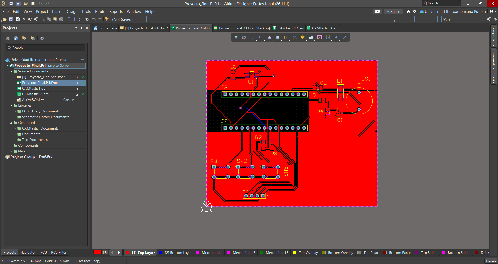
Proyecto y documentos¶
- Abrir File → New → Project y elegir un proyecto de PCB.
- Asignar un nombre y elegir su ubicación local o el Workspace del equipo.
- Agregar el esquema
.SchDocy la PCB.PcbDoc. Para archivos que ya existen, utilizar Add Existing to Project. - Guardar los documentos y comprobar que aparecen en Source Documents bajo el mismo
.PrjPcb.
El panel Projects muestra Proyecto_Final.PrjPcb en el Workspace de la Universidad Iberoamericana Puebla. El esquema y la PCB están bajo Source Documents, junto a CAMtastic1.Cam y CAMtastic3.Cam. La carpeta Libraries agrupa las bibliotecas asociadas y Generated reúne las referencias a salidas del proyecto.
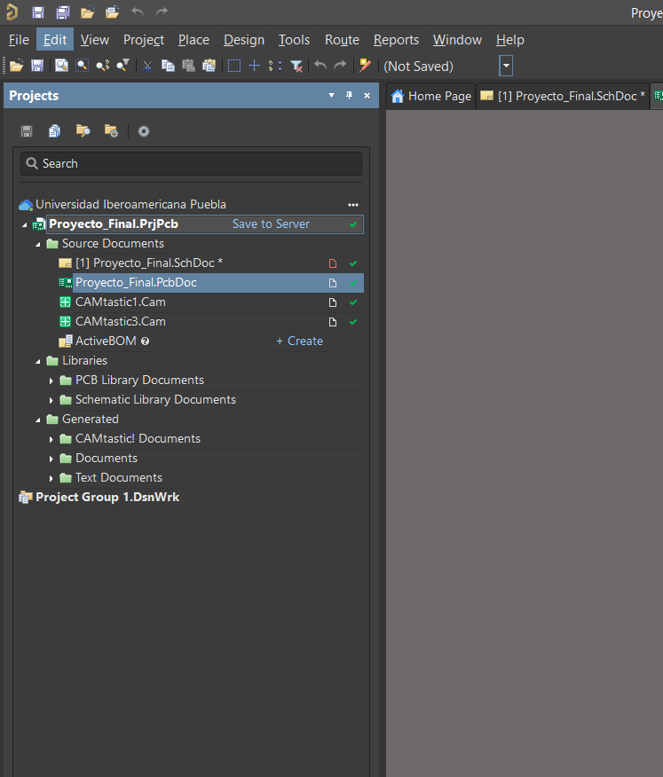
Bibliotecas y componentes¶
- Abrir Components y localizar la pieza en la biblioteca disponible.
- Colocar el símbolo y seleccionarlo en el esquema para consultar Properties.
- Revisar Designator, Comment y Source. En Footprints, comprobar que el encapsulado y los pads correspondan al componente.
En el caso de U1, Source muestra el Workspace de la Universidad Iberoamericana Puebla. El sensor MCP9808-E/MS utiliza la huella MCHP-MSOP-MS8_M, con ocho terminales y paso de 0.65 mm. En el esquema guardado, J2 y J3 usan el símbolo DS1023-1x15SF11_LOCAL de Conectores_Reloj.SchLib.
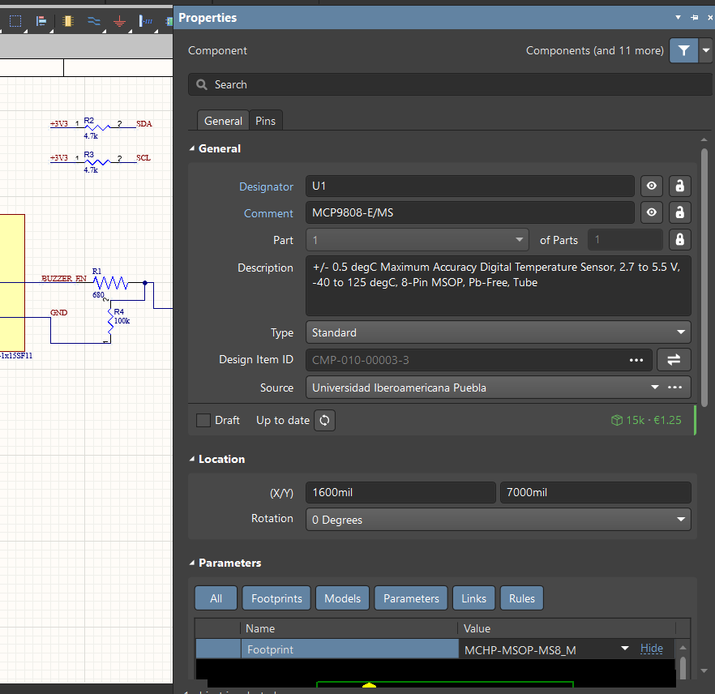
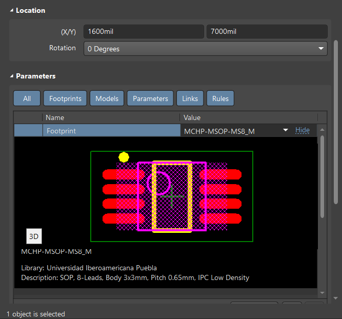
| Referencia | Componente o valor | Función en la placa |
|---|---|---|
| U1 | MCP9808-E/MS |
Sensor digital de temperatura |
| J1 | TSW-104-07-G-S |
Conector auxiliar de alimentación e I²C |
| J2, J3 | DS1023-1x15SF11 |
Dos conectores de 15 pines para el controlador |
| SW1, SW2, SW3 | B3F-1000 |
Pulsadores de menú, avance y confirmación |
| R1 | RC1206FR-07680RL, 680 Ω |
Resistencia de base de Q1 |
| R2, R3 | 4.7 kΩ, 1 %, 1206, 250 mW | Resistencias de polarización de SDA y SCL |
| R4 | 100 kΩ, 1 %, 1206, 250 mW | Polarización de la base de Q1 hacia tierra |
| C1 | CL31B104KBCNNNC, 100 nF |
Desacoplo de alimentación |
| C2 | 10 µF, 10 %, 16 V, 1206 | Desacoplo de alimentación |
| LS1 | KXG1203C |
Zumbador |
| D1 | SS12 |
Diodo en paralelo con el zumbador |
| Q1 | MMBT3904LT1G |
Transistor de conmutación del zumbador |
Editor de esquemas¶
El esquema se organiza en cuatro bloques. El sensor MCP9808 comunica sus lecturas por SDA y SCL, con resistencias de 4.7 kΩ hacia +3V3. C1 y C2 están entre +3V3 y GND. Los pulsadores cierran su señal a GND al presionarlos. El zumbador se conecta a +3V3 y Q1 conmuta su retorno a tierra cuando el controlador activa BUZZER_EN.
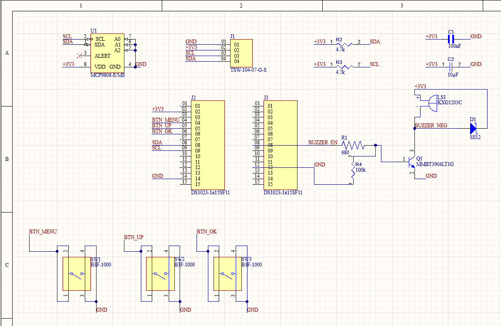
- Colocar los símbolos y comprobar que cada uno tenga un designador único.
- Usar Place → Wire para conectar pines y colocar Place → Net Label sobre los cables que requieran un nombre.
- Reutilizar las etiquetas en los puntos de la hoja que deban pertenecer a la misma red. Revisar que la etiqueta esté anclada al cable.
- Verificar las uniones y las señales en los conectores antes de actualizar la PCB.
En el esquema completo, SDA y SCL se pueden seguir desde U1 hasta J1 y J2 por sus etiquetas. Los nombres BTN_MENU, BTN_UP y BTN_OK vinculan J2 con SW1, SW2 y SW3. El estado de reposo de las entradas depende de la polarización que use el controlador.
| Conector | Pines visibles en el esquema | Uso |
|---|---|---|
| J1 | 01 GND, 02 +3V3, 03 SCL, 04 SDA |
Expansión auxiliar |
| J2 | 02 +3V3, 04 BTN_MENU, 05 BTN_UP, 06 BTN_OK, 08 SDA, 09 SCL, 14 GND |
Alimentación, pulsadores y bus I²C |
| J3 | 08 BUZZER_EN, 12 GND |
Control del zumbador y retorno |
Validación eléctrica¶
- En el panel Projects, seleccionar el proyecto y ejecutar Validate PCB Project.
- Abrir Messages y revisar cada entrada asociada al esquema.
- Para la advertencia de
SCL, revisar el tipo eléctrico de los pines implicados y cómo se representa el controlador externo en el circuito.
Resultado de la validación del esquema
El panel Messages informa una compilación con cero errores y muestra una advertencia para SCL. Altium indica que la red carece de una fuente que la maneje. El esquema lleva SCL a J2-09 y a U1. Queda por confirmar el manejo del reloj desde el controlador y la causa de la advertencia en la configuración eléctrica.
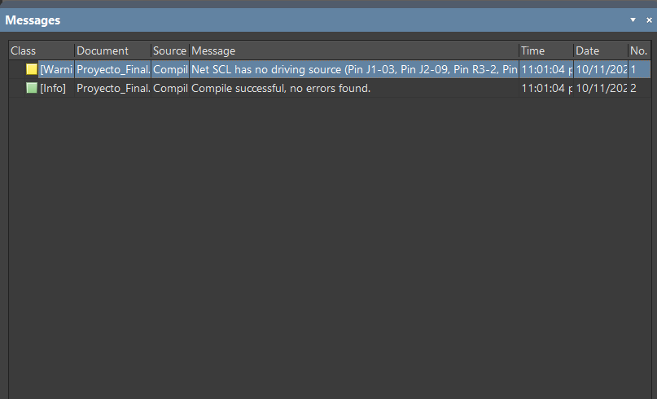
Validación eléctrica del proyecto
Transferencia a la PCB¶
- Guardar el
.SchDocy el.PcbDocdentro del proyecto. - Con el esquema activo, abrir Design → Update PCB Document si se necesita sincronizar cambios.
- Cuando aparezca una Engineering Change Order (ECO), revisar huellas, componentes y redes. Usar Validate Changes y luego Execute Changes para aplicar los cambios revisados.
- Comprobar en la PCB que los designadores coincidan con el esquema y que las redes estén asignadas a sus pads.
La sincronización mediante ECO queda como referencia para futuras revisiones. La evidencia de esta práctica muestra los documentos asociados y la distribución final de la PCB. Sincronización entre esquema y PCB
Preparación de la placa¶
Abrir Design → Layer Stack Manager y revisar Stackup. La configuración del proyecto tiene dos capas de señal de cobre de 1 oz, cada una con 0.03556 mm de espesor. Entre ellas aparece Dielectric 1, con material FR-4 y 0.32004 mm configurados. Top Solder y Bottom Solder corresponden a las máscaras de soldadura. Top Overlay y Bottom Overlay son capas de serigrafía.
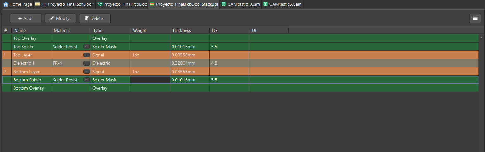
- Definir el contorno físico con Board Shape. Verificar que el perímetro sea cerrado.
- En 2D, abrir Reports → Measure Distance (
Ctrl+M). Medir el ancho y el alto con los puntos ajustados a los vértices del contorno. - Registrar la componente X Distance para el ancho y Y Distance para el alto. Para una medición horizontal o vertical, verificar que el desplazamiento en el otro eje sea cero.
El contorno rectangular guardado en Proyecto_Final.PcbDoc abarca 3040 × 2595 mil, equivalentes a 77.216 × 65.913 mm. Las capturas muestran una lectura horizontal de 77.216 mm con un desplazamiento vertical de 0.127 mm y una lectura vertical de 65.659 mm. La lectura vertical corresponde a los puntos seleccionados en la captura. Para especificar la placa se toman los vértices del contorno guardado.
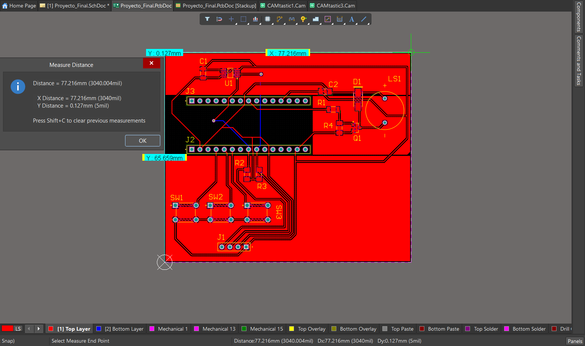
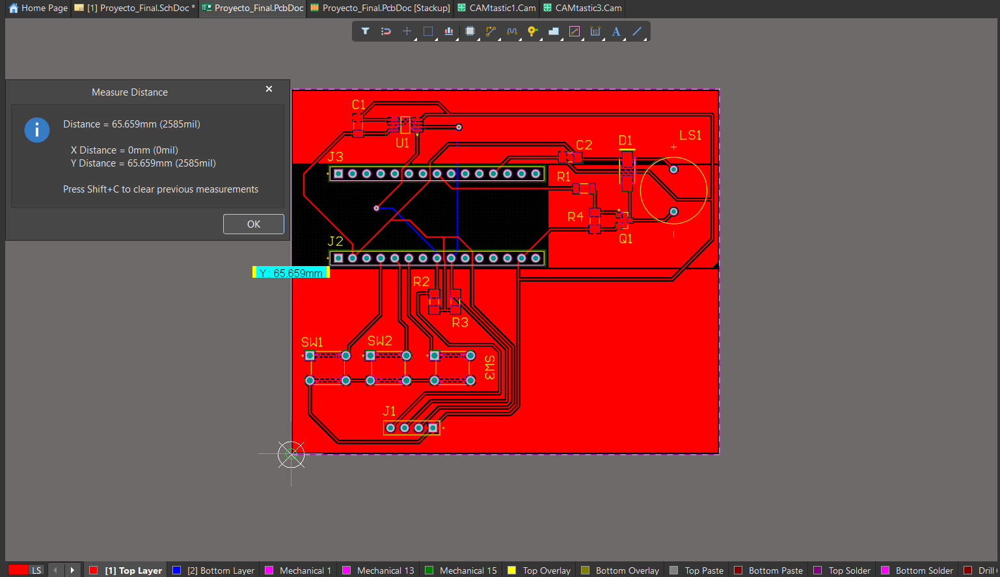
J2 y J3 ocupan dos filas paralelas en la zona central. El sensor U1 queda hacia el borde superior y el zumbador LS1 hacia la derecha, junto a su etapa de control. Los pulsadores se alinean debajo de J2 y J1 queda cerca del borde inferior. Esta distribución permite identificar cada bloque del esquema en el diseño físico.
Diseño y ruteo¶
Con la PCB activa, abrir Design → Rules. En Routing → Width, comprobar el alcance y los límites por capa. La regla Width de esta placa muestra 0.089 mm de mínimo, 0.381 mm como valor preferido y 2.54 mm de máximo en ambas capas de señal.
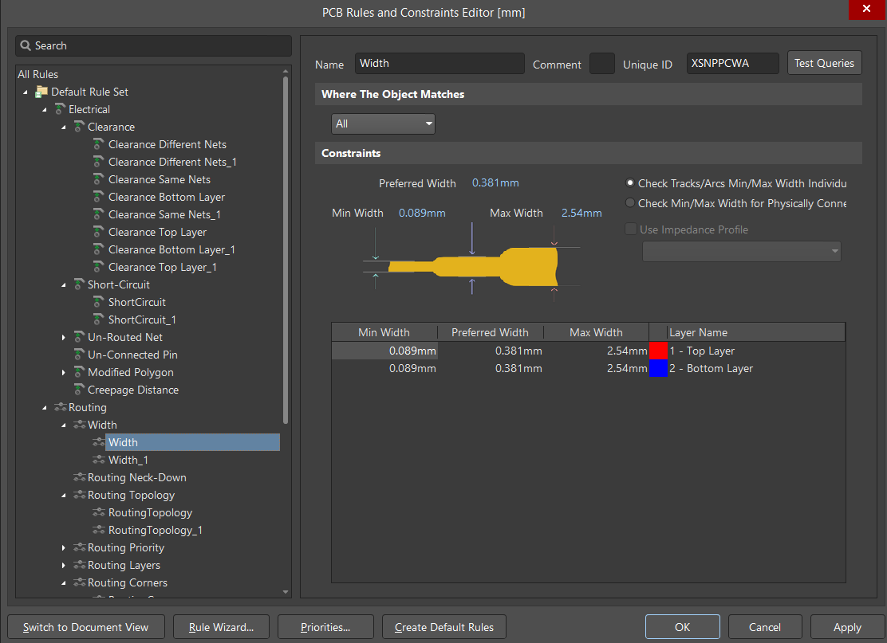
En Electrical → Clearance, la regla Clearance Different Nets muestra separaciones según los objetos. La matriz indica 0.089 mm entre pistas y 0.2 mm entre una pista y un pad pasante. El reporte DRC también lista restricciones de 0.203 mm con alcance por capa. Para interpretar una separación se debe revisar qué regla aplica al par de objetos evaluado.
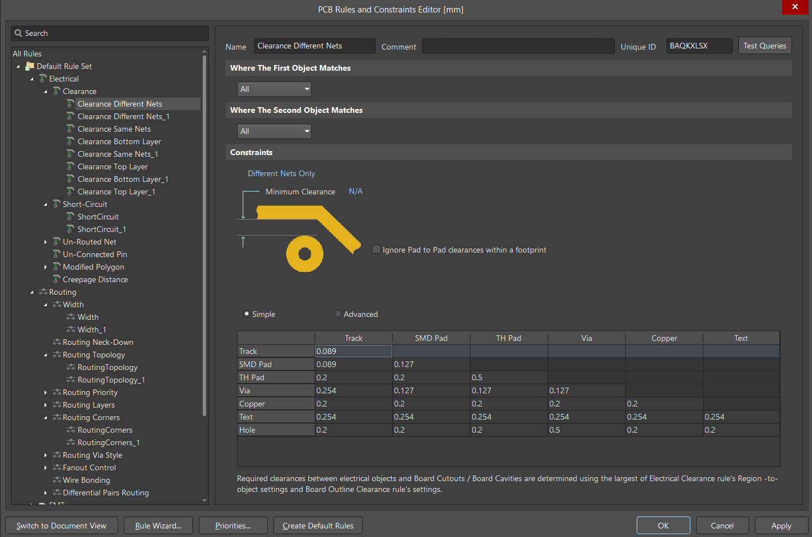
- Activar la capa de señal prevista e iniciar Route → Interactive Routing.
- Seleccionar un pad y llevar la pista hasta el destino de su red, respetando la separación y el ancho de la regla aplicable.
- Revisar en Properties la red, capa y ancho del segmento seleccionado. Comprobar los cambios de capa y las conexiones pendientes en el DRC.
En la PCB ruteada, las pistas rojas corresponden a Top Layer y las azules a Bottom Layer. La pista seleccionada en el segundo ejemplo pertenece a +3V3, está en Top Layer y mide 0.381 mm de ancho y 12.393 mm de largo en ese segmento.
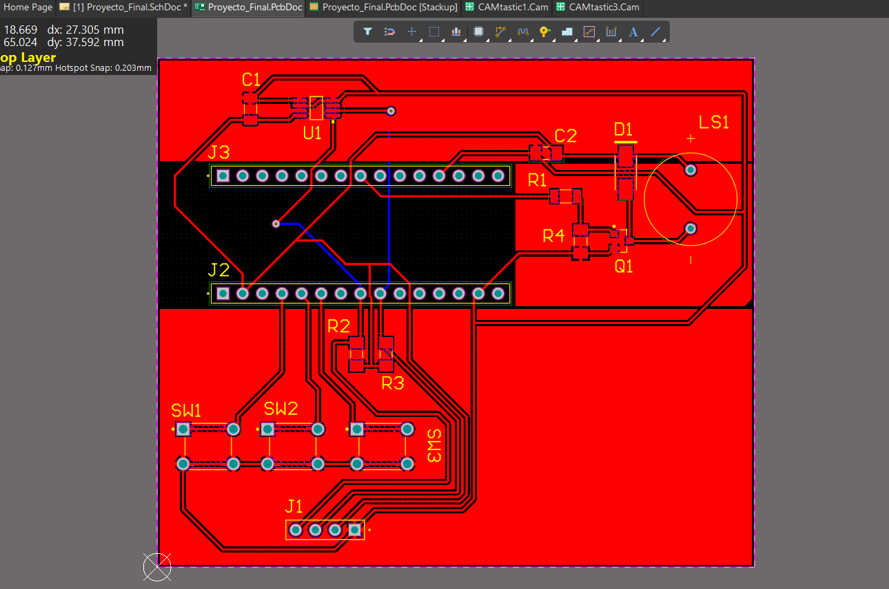
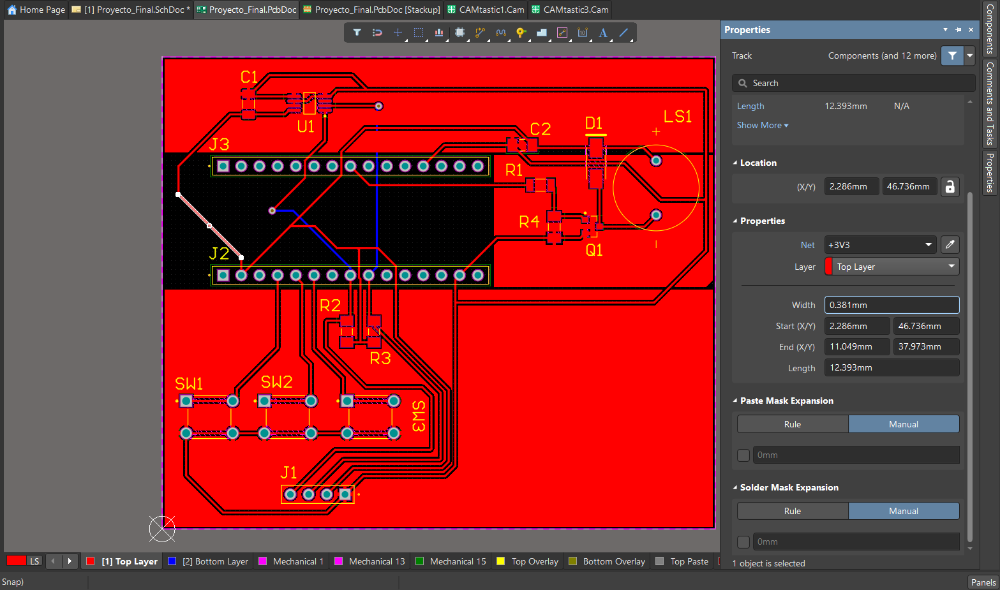
Seleccionar un designador y revisar su posición, tamaño y capa en Properties. En el ejemplo, J2 está en Top Overlay con una altura de 1.524 mm y un grosor de trazo de 0.254 mm. Colocar las referencias cerca de sus componentes para que la serigrafía permita identificarlos durante el montaje.
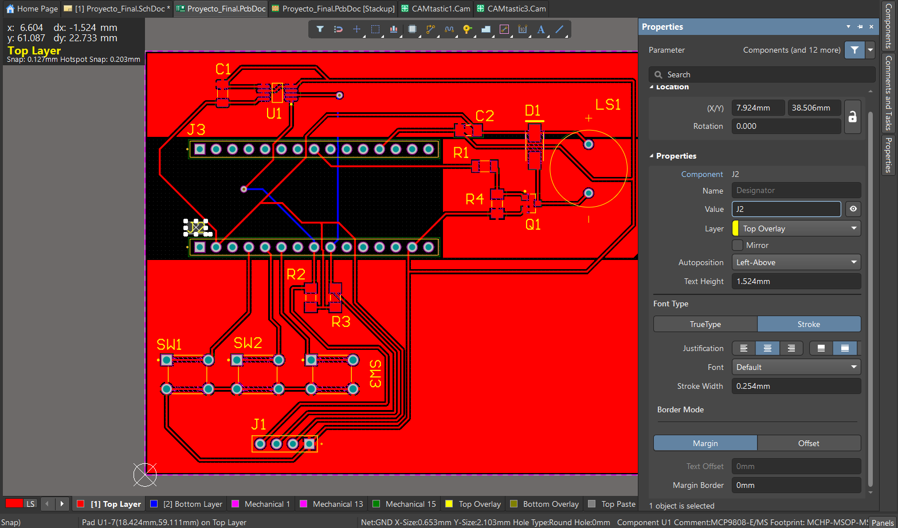
Perforaciones y planos de cobre¶
Para revisar una perforación, seleccionar el pad o la vía en el editor y consultar su diámetro de agujero en Properties. El reporte Proyecto_Final.DRR agrupa las herramientas de la salida NC Drill entre Top Layer y Bottom Layer. Registra 50 perforaciones redondas metalizadas.
| Herramienta | Diámetro | Cantidad |
|---|---|---|
| T01 | 0.500 mm | 2 |
| T02 | 0.900 mm | 2 |
| T03 | 1.020 mm | 34 |
| T04 | 1.200 mm | 12 |
La PCB guardada contiene tres polígonos sólidos de GND en Top Layer. Se distinguen como regiones rojas alrededor del sensor, el zumbador y la zona de los pulsadores en la vista ruteada.
Para reproducir esta etapa, colocar un Polygon Pour, seleccionar la capa y asignar la red GND en Properties. Después de editar las pistas, usar Repour para recalcular el relleno y revisar sus conexiones y separaciones antes del DRC. Polígonos en capas de señal
Verificación final¶
- Guardar la PCB con los rellenos actualizados.
- Abrir Tools → Design Rule Check, seleccionar las comprobaciones y activar la generación del reporte.
- Ejecutar la revisión y comprobar las entradas del resumen.
El reporte de Proyecto_Final.PcbDoc del 10 de noviembre de 2026 registra 0 advertencias y 0 violaciones en las reglas ejecutadas. El archivo de reporte incluye comprobaciones de aislamiento, cortocircuitos, conexiones sin rutear y anchos de pista.
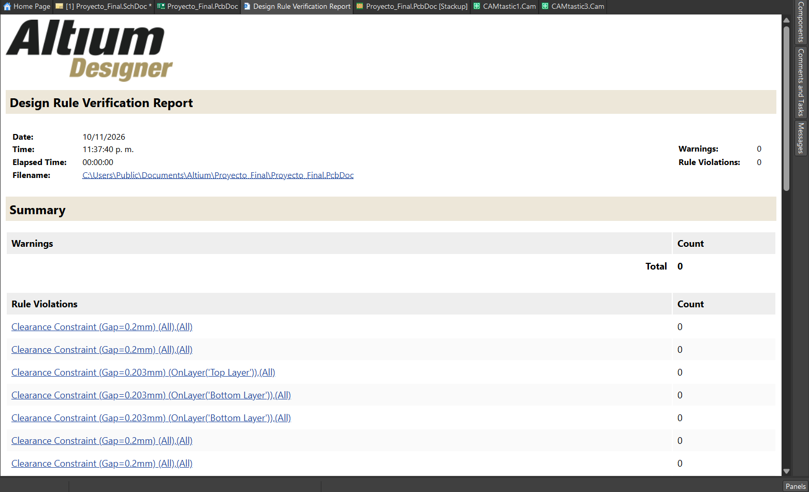
Con el .PcbDoc activo, presionar 3 para abrir la vista 3D. Revisar el contorno, la orientación, la posición de los pulsadores y el acceso a los conectores. La captura muestra los tres pulsadores y varios componentes SMD con sus modelos. Las posiciones de J1, J2, J3 y LS1 se identifican por sus huellas y marcas de serigrafía.
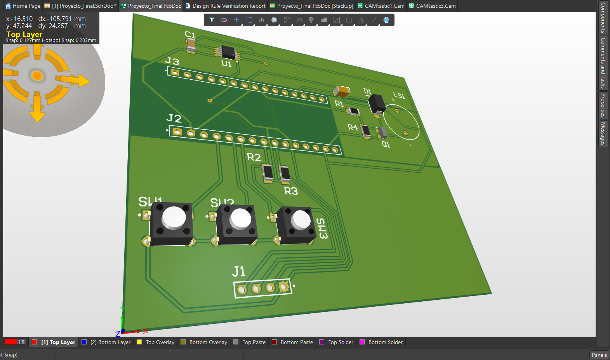
Archivos de fabricación¶
Desde el .PcbDoc, File → Fabrication Outputs → Gerber Files permite seleccionar las capas de cobre y el perfil de la placa. NC Drill Files genera el archivo de perforaciones. Para verificar las salidas, abrirlas en un visor CAM y superponer el cobre superior, el inferior, el perfil y los agujeros. Preparación de datos de fabricación
| Evidencia disponible | Detalle |
|---|---|
Proyecto_Final-Plated.TXT |
Salida NC Drill métrica con formato 4:4 y cuatro herramientas para agujeros metalizados. |
Proyecto_Final.DRR |
Reporte de diámetros y cantidades del taladrado. |
CAMtastic1.Cam y CAMtastic3.Cam |
Documentos CAM del proyecto. Entre sus referencias aparecen Proyecto_Final.GTL, Proyecto_Final.GBL, Proyecto_Final.GM y Proyecto_Final-Plated.TXT. |
Para cerrar esta etapa queda por reunir el juego Gerber de la revisión final y comprobar visualmente la coincidencia entre cobre, perfil y perforaciones. Se debe confirmar el método de fabricación de esta placa. Si se emplea la fresadora con Mods, se documentará también el formato de entrada, la conversión utilizada y la comprobación de escala en el programa.